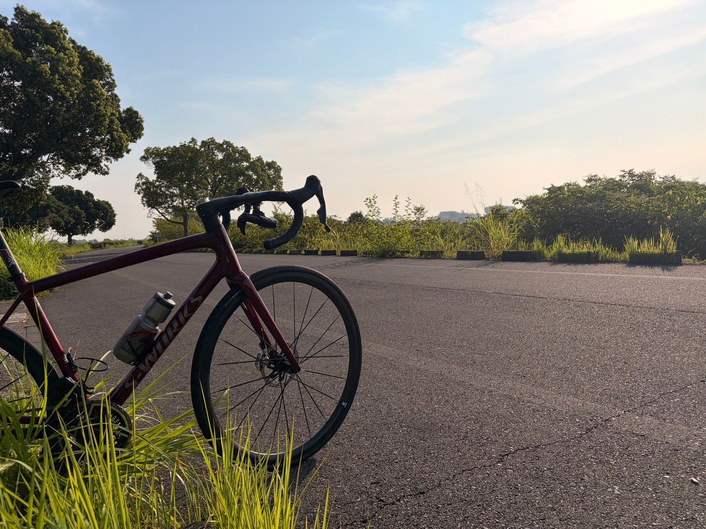
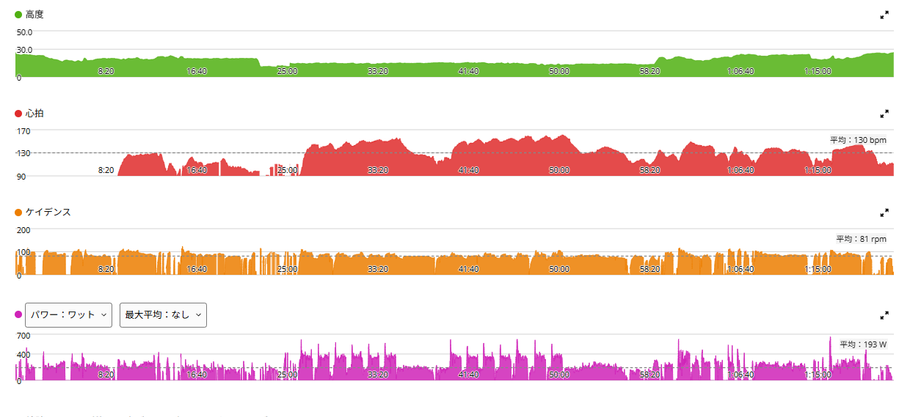
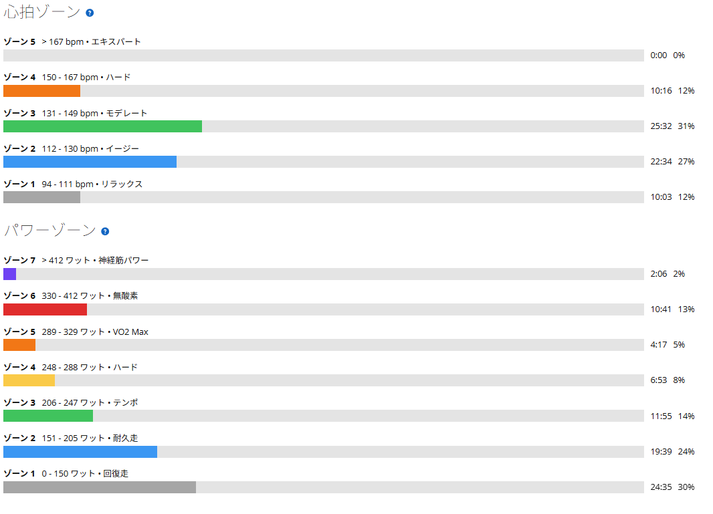

空は秋、気温は夏。60/30の振れ幅が21Wから14Wへ縮んだ
今日は渡良瀬遊水地で60秒ON／30秒OFF。写真だけ見ると、かなり秋っぽい。空も少し柔らかくなって、朝の光もどこか落ち着いている。「今日は秋日和かな」と思ったけれど、実際に走ってみたら普通に暑かった。まだ夏やんけ。
前回ここで60/30をやったとき、次の課題は「出力を上げること」ではなく「狙った出力へ入る技術」だと書いた。今日はそれを試す日である。

41.99km・NP243W・TSS103.2
- 全体41.99km / 1時間20分43秒 / 獲得62m / 運動負荷107
- 負荷平均193W / NP243W / IF0.884 / TSS103.2 / 最大661W / 20分最大262W
- 心拍・回転平均130bpm / 最大161bpm / 平均81rpm
- 環境平均28.3℃ / 最高30.0℃ / 推定発汗943ml
- 効果有酸素TE3.2 / 無酸素TE0.0
前回の渡良瀬60/30（TSS113.1）より、全体の負荷は少し抑えめ。でも今回の目的はそこではない。今日は「高い数字を出す」より「出力を安定させる」ことを優先した。
1セット目は359W。振れ幅は21Wから14Wへ
- 今回の1セット目367W → 353W → 355W → 364W → 356W → 357W
- 平均・振れ幅約359W / 353〜367Wで14W
- 前回（8月19日）約374W / 367〜388Wで21W
前回は370〜380W台まで上げて、そのぶん後半で落ちた。今回は最初から少し低めで入った。その代わり、大きくブレない。353〜367Wの範囲に収まって、振れ幅は21Wから14Wへ縮んでいる。
「最低365Wを絶対守る」みたいにすると、最初に上げすぎて、そこから落ちる。それより少し低くても、最初から最後まで同じくらい。今はその方が練習として合っている気がする。

2セット目は364W。前回と逆に、むしろ上がった
- 今回の2セット目367W → 352W → 359W → 355W → 378W → 371W →（追加）366W
- 平均・振れ幅約364W / 352〜378Wで26W（前回は32W）
- セット間の変化今回 359W→364Wで+5W（前回は374W→364Wで−10W）
ここが今日いちばん良かったところである。前回は1セット目より2セット目が落ちた。今回は逆に、2セット目の方が5W高い。抑えて入ったぶん、後半まで余裕を残せたということだと思う。最後の2本は378Wと371Wまで戻せている。
ちなみに、2セット目の途中で「6本やったっけ？ 7本目かもしれない。いや6本目かもしれない」となった。足りないのは嫌だったので、とりあえずもう1本。追加は366W。結果として2セット目は7本やっていた。こういうところは、実走ならではということで。
オーバーシュートを減らしたら、前回よりマシだった
前回はONに入る瞬間に400W近くまで一気に跳ねて、そこから目標値まで落ち着く。そんな入り方が多かった。今回はそこを少し意識した。いきなり踏みすぎない。最初から必要なところへ入る。
完全にはできていないけれど、前回よりはかなりマシだった。体感としても「今回の方がまだやりやすい」という感じである。もちろん60/30なので普通にきつい。でも最初に無駄に脚を使って、後半ただ耐えるという感じではなくなってきた。
- パワーゾーンZ7 2分06秒 / Z6 10分41秒 / Z5 4分17秒 / Z4 6分53秒（Z5以上で17分04秒）
- 心拍ゾーンZ4 10分16秒 / Z3 25分32秒 / Z2 22分34秒 / Z5はゼロ

ケイデンスは85rpm前後。ダンシングは一度なしで試す
今日はケイデンスも少し意識した。90rpm台まで上げると、自分の場合はパワーが出すぎやすい。逆に低くしすぎると、今度は狙ったパワーまで上げにくい。なので今日は85rpm前後。このくらいが、今は一番コントロールしやすい。高ケイデンスで勢いよく回すより、少し落ち着いた回転数で狙った出力を作る。今の60/30では、その方が合っている感じがする。
もうひとつ気になったのがダンシングである。ONに入る時、最初の数秒だけダンシングを入れることがある。加速はしやすい。でも、その瞬間だけパワーが一気に上がって、最大値を見ると500W台や600W台まで跳ねている。短い時間なので60秒平均にはそこまで影響しないが、「きれいに350〜360W台へ入る」練習をしたいなら、これは少し邪魔かもしれない。
次回は一度、ONを全部シッティングでやってみようと思う。加速も座ったまま、ギアで調整して、最初から必要なパワーへ入る。その方が60秒の中身ももっと平らにできそうだ。ダンシング禁止を絶対のルールにするつもりはないが、一度なしで試してみたい。
次回は「何本目か分からない」をなくしたい
今回の反省は、出力よりむしろ本数管理である。2セット目の途中で本数が分からなくなった。結果、足りないよりは多い方がいいということで、もう1本やった。
次回はGarmin側で本数を分かるようにしたい。ONごとにラップを切るのでもいいし、60秒ON／30秒OFFをワークアウトとして作ってしまうのでもいい。脚より先に、数を数える方で混乱した。ここは次回までに改善したい。
今日やってみて思ったこと
前回の渡良瀬60/30は、高い出力を狙って後半に落ちた。今回は、少し抑えて入って最後まで揃えた。その違いがかなり大きかった。1セット目は約359Wで振れ幅14W。2セット目も大きく崩れず、最後は378Wや371Wまで戻せた。しかも間違えて7本やって、それでも終わった。
なので今は「もっと高く」より「もっときれいに」の方がいい。85rpm前後。オーバーシュートを減らす。ダンシングは一度なしで試す。そして、何本目かはGarminに数えてもらう。次の課題はかなり分かりやすい。
空は秋っぽかった。でも暑かった。脚もきつかった。ただ、前回よりは少しだけ上手に走れた気がする。
次に見るポイント
- 振れ幅1セット目の14Wをさらに縮められるか。2セット目の26Wをどこまで寄せられるか
- シッティング固定ダンシングなしでも同じ振れ幅を出せるか
- ケイデンス85rpm前後が本当に一番作りやすいのか
- 本数管理ラップかワークアウトで、数えなくて済む形にできるか
- 出力を上げる時期揃った状態のまま、370W台へ戻せるのはいつか